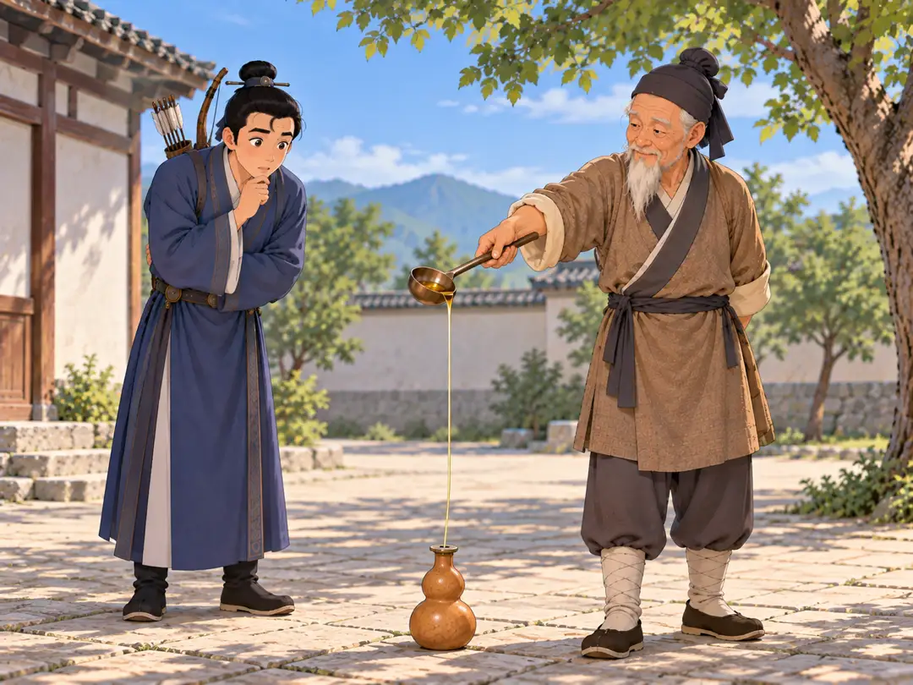

卖油翁：熟能生巧
The Archer and the Oil Seller

The old man sends a thin stream of oil through the coin's tiny hole without wetting the coin.
很久以前，有一个叫陈尧咨的人，射箭的本领很高。一天，他在自家的园子里练习射箭。他拉开弓，一箭射中靶子；接着又是一箭，又是一箭。十支箭里，常常有八九支都能射中。
这时，一位卖油的老人路过。他放下担子，站在旁边看了一会儿。陈尧咨注意到了他。老人明明看见他接连射中，却没有特别惊讶，只是轻轻点了点头。陈尧咨有些好奇，便问：“你也懂射箭吗？你觉得我射得怎么样？”
老人平静地说：“射得很好。只是练得多了，手熟了。”陈尧咨听了，还是有些不明白。老人笑了笑：“我给你看看吧。”
他把一个葫芦放在地上，又拿出一枚中间有小方孔的铜钱，盖在葫芦口上。然后，他拿起油勺，慢慢往下倒。一股细细的油流，正好穿过铜钱中间的小孔，流进葫芦里。
倒完以后，陈尧咨凑近一看，铜钱上竟然一点油也没有沾到。老人笑着说：“没有什么神奇的。只是做得多了，手熟了。”
陈尧咨看看那枚铜钱，又看看自己的弓。两个人练的本领完全不同：一个把箭射向靶心，一个把油倒进小小的孔里。可他们的本领，都是这样练出来的：认真地做一次，再做一次，慢慢地，原本很难的事情就变得越来越熟练。
这就是“熟能生巧”的意思。
Long ago, a man named Chen Yaozi was known for being an excellent archer. One day, Chen was practicing in his garden. He drew his bow, let an arrow fly, and hit the target. Then he did it again and again. Out of ten arrows, eight or nine would land exactly where he wanted.
An old man who sold oil happened to stop nearby. He set down what he was carrying and watched for a while. Chen noticed him. The old man had seen all those arrows hit the target, but he did not look especially amazed. He only gave a small nod. Curious, Chen asked, “Do you know much about archery? What do you think of my shooting?”
The old man answered calmly. “You’re very good. You’ve practiced until your hands know what to do.” Chen was not quite satisfied with that answer, so the old man smiled. “Let me show you what I mean.”
He placed a gourd on the ground and laid a coin over its opening. The coin had a tiny square hole in the middle. Then he lifted his ladle and began to pour. A thin stream of oil slipped neatly through the little hole and into the gourd.
When he finished, Chen leaned closer. The coin was still dry. The old man smiled again. “There’s no magic to it. I’ve simply done it so many times that my hands are used to it.”
Chen looked at the coin, then at his bow. The two men had practiced very different things. One sent arrows toward a target; the other poured oil through a tiny hole. But both had learned the same way: by doing something carefully, over and over, until a difficult skill began to feel natural.
That is the idea behind shú néng shēng qiǎo—with practice, skill grows.